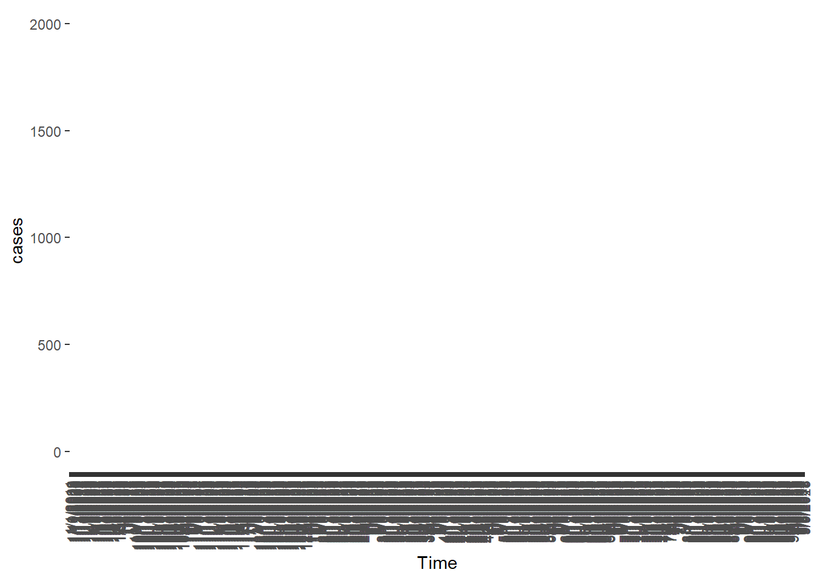

| year | week | start.date | end.date | district | cases |
|---|---|---|---|---|---|
| 2006 | 52 | 12/23/2006 | 12/29/2006 | Colombo | 71 |
| 2007 | 1 | 12/30/2006 | 1/5/2007 | Colombo | 40 |
| 2007 | 2 | 1/6/2007 | 1/12/2007 | Colombo | 43 |
| 2007 | 3 | 1/13/2007 | 1/19/2007 | Colombo | 38 |
| 2007 | 4 | 1/20/2007 | 1/26/2007 | Colombo | 52 |
| 2007 | 5 | 1/27/2007 | 2/2/2007 | Colombo | 69 |
1 Introduction
1.1 What is a Stochastic Process?
First, let’s see what does “stochastic” mean? The meaning of “stochastic” is random. The term “process” refers to a mathematical or statistical model that describes the evolution of a random variable over time. In the study of a stochastic process, we examine a collection of random variables indexed by a certain parameter, typically time, representing the evolution of a system over a series of discrete or continuous instances.
For example, suppose we monitor the weather condition every hour in a day sunny, rainy, and cloudy. Then you are essentially observing a stochastic process. This process describes how the weather condition evolves over time.
Can we describe this situation using a single random variable? No, we cannot. We need a sequence of random variables index by time as follows:
\(X_0\) - weather condition from 00:00 to 01:00
\(X_1\) - weather condition from 01:00 to 02:00
.
.
.
\(X_{23}\) - weather condition from 23:00 - 00:00
The above scenario can be framed as a stochastic process. Here’s how it relates to the concept of a stochastic process:
Time index: The time index is the hour of the day as 0, 1, 2, 3, … 23. Each hour is a specific point in time.
Random variable: The weather conditions at each hour can be viewed as random variables. These random variables can be take different values such as sunny, rainy and cloudy. The weather conditions sunny,rainy and cloudy are called states (see Section for more information).
In many real life situations, observations are made over a period of time. Stochastic processes are used to model and analyze such time-dependent random phenomena, allowing you to study the probabilistic behavior and make predictions about future states based on past observations. When dealing with stochastic processes, we can address various probabilistic questions, including but not limited to:
Conditional probabilities: For instance, given that the weather has been cloudy for the first five hours of the day, you can use the stochastic process to estimate the likelihood of it remaining cloudy or changing to a different condition in the next hour.
Time to an event: For example, you can estimate how long it will take for the weather to change from cloudy to sunny.
Transition probabilities: For instance, you can determine the likelihood of going from a rainy day to a sunny day or vice versa.
Frequency of Events: You can examine the frequency of specific events occurring within a given time frame.
These are just a few examples of the probabilistic questions that can be addressed using stochastic processes. The specific questions you can answer will depend on the nature of the process and the data available for analysis.
1.2 Definition of a stochastic process
Definition 1
A stochastic process is a collection of random variables \(\{X_t, t\in T\}\) or \({X(t), t \in T}\) where \(T\) is an index set.That is for each \(t \in T\), the random variable \(X_t\) (or \(X(t)\)) is a random variable.
1.3 Parameter space
In definition 1, the index set \(T\) is called the parameter space. It is usually interpreted as a time variable, telling us when the process is measured. The parameter space can be discrete or continuous.
1.3.1 Discrete-parameter process
When \(T\) is a countable set, the process is said to be a discrete-parameter process. A discrete-parameter stochastic process is defined as follows:
\[\{X_t: t \in T\}\] Example: Number of Customers arriving each hour to a particular super market (Discrete Parameter Space)
In this scenario, you are interested in the number of customers arriving during each discrete time interval, typically on an hourly basis.
1.3.2 Continuous-parameter space
When \(T\) is an interval of the real line, the process is said to be a continuous-parameter process. A continuous-parameter stochastic process is defined as follows:
\[\{X(t): t \in T\}\]
Example 1: Number of Customers Arriving from 8 AM to 10 PM (Continuous Parameter Space):
In this scenario, you are interested in the total number of customers arriving over a continuous time period, specifically from 8 AM to 10 PM.
1.4 State space
The set of possible values of an individual random variable \(X_t\) or \(X(t)\) of a stochastic process is called the state space. The state space can be discrete or continuous.
1.5 Random Variable in Probability Theory vs Stochastic Theory
1.5.1 Probability theory
Let \((\Omega, \mathscr{F}, \mathbb{P})\) be a probability space. A measurable mapping \(X: \Omega \rightarrow \mathbb{R}\) is called a random variable. The \(X(\omega)\) for \(\omega \in \Omega\) iscalled a realization of \(X\).
Example:
1.5.2 Stochastic theory
Suppose that \((\Omega, \mathscr{F}, \mathbb{P})\) is a probability space, the function \(X: T \times \Omega \rightarrow \mathbb{R}\) .
- We will always assume that the cardinality of \(T\) is infinite, either countable or uncountable.
If \(T=\mathbb{Z}^+\) then we called \(X\) a discrete time stochastic process.
If \(I = [0,\infty)\), then \(X\) is said to be a continuous time stochastic processes.
1.6 Sample path (trajectory) of a stochastic process
The function \(t \rightarrow X_t(\omega)\) (\(t \rightarrow X(t)(\omega)\)) is called a sample path of the stochastic process. For each
Example:
1.7 Types of Stochastic Processes
Depending on the parameter space and state space we can define four type of stochastic processes.
1. Discrete-Parameter Discrete-State Space Stochastic Processes:
Parameter Space: Discrete
State Space: Discrete
Examples: Assessment of crop condition during routine field inspections in agriculture is categorized as: healthy, pest-infested, diseased, damaged. These field inspections are typically conducted at regular intervals, such as once a week
2. Continuous-Parameter Discrete-State Space Stochastic Processes:
Parameter Space: Continuous
State Space: Discrete
Examples:
3. Discrete-Parameter Continous-State Space Stochastic Processes:
Parameter Space: Discrete
State Space: Continuous
Examples:
4. Continuous-Parameter Continuous-State Space Stochastic Processes:
Parameter Space: Continuous
State Space: Continuous
Examples:
1.8 Stochastic proceses vs Time series
Figure Figure fig-plot1 shows a weekly dengue cases in Sri Lanka from 2006 - Week 52 to 2023 - Week 8. The data are available in the denguedatahub package in R (dengudatahub?). The first few rows of the dataset is shown below.
Let’s define the set of random variables as follows:
\(X_0\) - Cases of dengue during the fifty second week of 2006
\(X_1\) - Cases of dengue during the first week of 2007
\(X_2\) - Cases of dengue during the second week of 2007
.
.
.
Do you consider Figure fig-plot1 as a visual representation of the above Stochastic Process?

The answer is “No”. Figure fig-plot1 is not a visual representation of the stochastic process. It is a realization of the above stochastic process. According to the data set in the fifty second week of 2006, there were 76 cases were reported. This is the observed value of the random variable \(X_0\). Similarly, the observed value of the random variable \(X_1\) is 40. Hence, Figure fig-plot1 represents the set of observed values of the the stochastic process. This is called a time series. “In other words, time series is a realization of a stochastic process. When we say a time series is a realization, we mean that it represents a specific outcome or path or trajectory of a stochastic process. A realization is essentially a particular observed sequence of values that the process can take. Therefore, when we say a time series is a realization of a stochastic process, we are highlighting that the observed sequence of data points in a time series is one possible outcome of a random process that unfolds over time. The stochastic nature implies that, even though the underlying process has certain statistical properties, the specific values observed at any given point in time are not predetermined and can exhibit variability.
1.9 Stochastic process vs a deterministic process
Consider the following data generating process and its visual representation. Let’s define the set of random variables as follows:
\(X_0\) - value at time \(t=1\)
\(X_1\) - value at time \(t=2\)
\(X_2\) - value at time \(t=3\)
.
.
.
Do you consider Figure fig-plot2 as a realization of a stochastic process?
t <- 1:100
xt <- sin(2*pi*t)
df <- data.frame(xt=xt, t=t)
ggplot(data=df, aes(x=t, y=xt)) +
geom_point() +
geom_line()
The answer is “No”. The reason is when you observe the above R-code you can see the values are generated based on the function \(\sin(2 \pi t)\). Hence, there is no randomness associated with he random variables. This type of process is called a deterministic process.